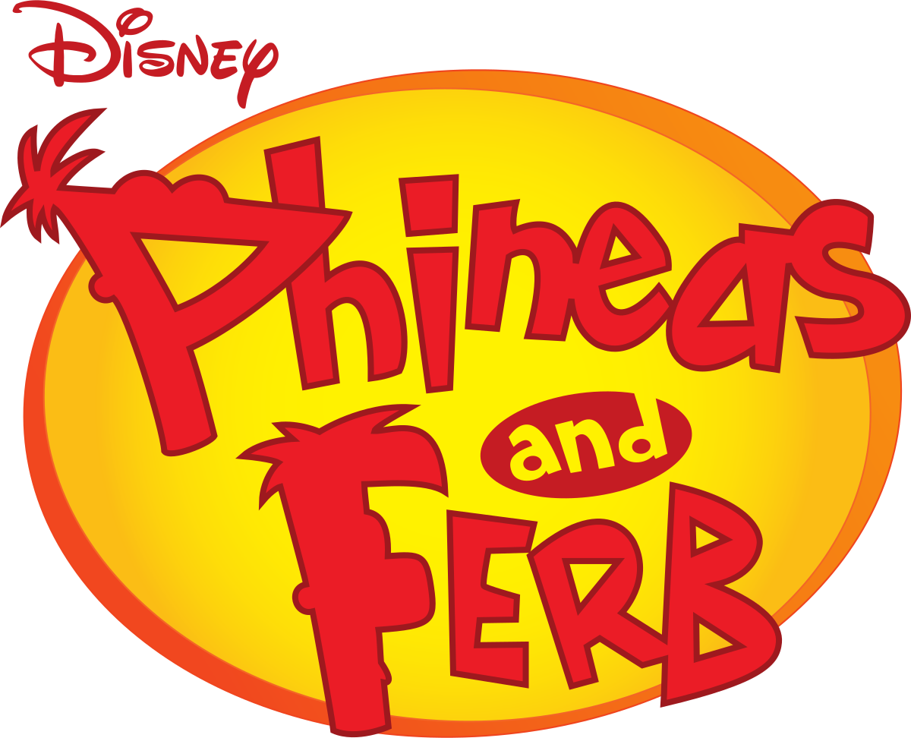

2007 | 4 Seasons | Animation, Comedy, Adventure
Phineas and Ferb is a fun and imaginative animated series following two stepbrothers, Phineas and Ferb, as they embark on extraordinary adventures during their summer vacation. With the help of their inventive minds and supportive friends, the duo creates incredible inventions and explores new possibilities while evading the attempts of their sister, Candace, to expose them. Meanwhile, their pet platypus, Perry, leads a double life as a secret agent battling the evil Dr. Doofenshmirtz.
Creators: Dan Povenmire, Jeff "Swampy" Marsh
Starring: Vincent Martella, Thomas Brodie-Sangster, Ashley Tisdale, Dee Bradley Baker, Dan Povenmire
© Disney Channel